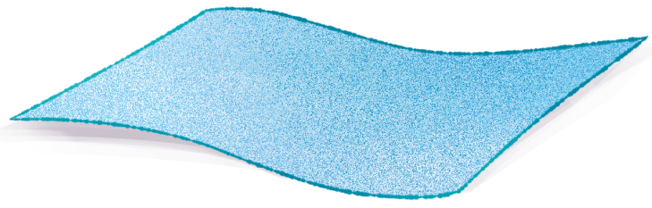
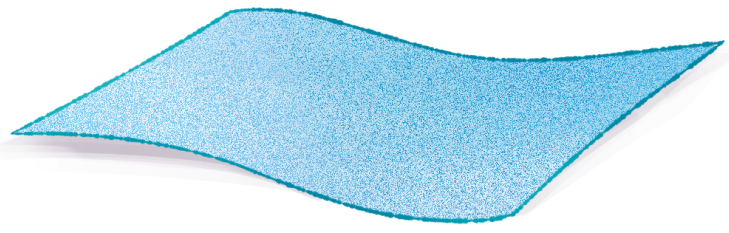
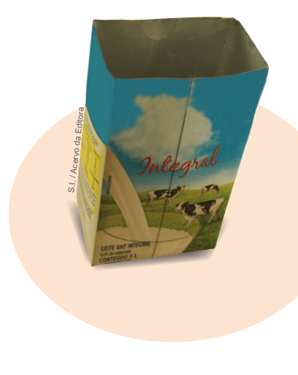
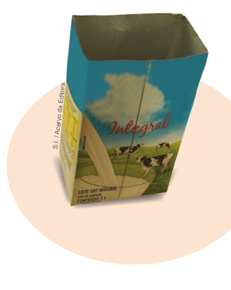
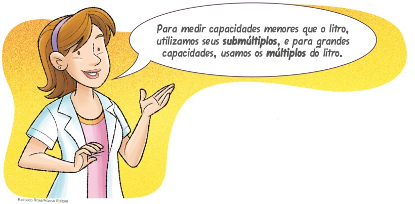
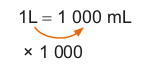
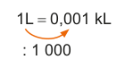
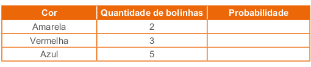
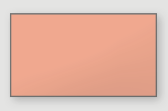

Para o estudo das medidas de capacidade, inicialmente é proposto aos alunos que construam um cubo medindo 10 cm – 10 cm – 10 cm e com volume igual a 1 dm³, para comparar o volume desse cubo com uma caixa de leite de capacidade igual a 1 litro. Nesse momento, pretende-se que os alunos, por meio desse experimento, estabeleçam a relação entre as medidas de volume e capacidade. Durante a construção do cubo, pode-se passar fita adesiva em suas arestas para reforçá-lo. Caso tenha um papel mais reforçado que cartolina, também pode ser usado. Após os alunos estabeleceram a relação entre as medidas de volume e capacidade, serão exploradas atividades que envolvem ambos os conceitos.
CAPÍTULO 7 - Medidas de capacidade
Capacidade de um recipiente
No Brasil, produz-se uma grande variedade de sucos naturais, que são vendidos em supermercados, feiras, etc. Essa variedade é consequência da diversidade de frutas cultivadas em nosso território.
O suco de acerola, por exemplo, é rico em vitamina C e apreciado em todas as regiões do país. Abaixo, temos duas jarras desse suco com 1 litro cada.

O líquido colocado em cada uma das jarras toma a forma desses recipientes. O litro (L) é uma medida de capacidade.
No Sistema Métrico Decimal, a unidade-padrão usada para medir volumes é o metro cúbico (m3) e, para medir capacidades, o litro (L). Mas que relação podemos estabelecer entre essas medidas? Vamos verificá-la fazendo o experimento a seguir:

1. Em dupla, vejam a relação de materiais necessários. Depois, mãos à obra!
Materiais:
► 1 caixa de leite de 1 litro vazia
► Régua graduada
► Tesoura sem ponta
► 1 cartolina
► Areia suficiente para encher a caixa de leite
► Cola

 

282
Converse com os alunos, antecipadamente, para que separem todo o material que será necessário para realizar o experimento. O experimento pode ser feito em duplas ou em grupos e, desta forma, eles podem se organizar para que no dia da atividade não falte nenhum material.
Durante esta aula, acompanhe as discussões das duplas ou grupos e observe como eles se organizam para realizar o experimento e responder às questões propostas. Oriente sempre que achar importante.
Procedimentos:
I. Façam o desenho na cartolina do molde de uma caixa, conforme o modelo, respeitando as medidas indicadas.
 

II. Recortem o molde e montem a caixa.
III. Em seguida, recortem a parte superior da caixa de leite, conforme mostra a imagem, e coloquem a areia nessa caixa, até enchê-la.
Agora, no caderno, respondam:
a) Quais medidas vocês utilizaram, em cm, para construir os lados dos quadrados? 10 cm
b) Quanto representa essa medida, em dm? 1 dm
c) Qual é o volume, em dm3, da caixa que vocês construíram? 1 dm³
d) Qual é a capacidade da caixa de leite que vocês trouxeram? 1 litro.
e) Transfira a areia da caixa de leite para a caixa construída. Comparando a capacidade da caixa de leite com o volume da caixa que você montou, qual relação podemos estabelecer entre essas unidades de medida? Podemos concluir que 1 dm³ = 1 L.
Por meio desse experimento, é possível verificar que:
1 dm3 = 1 L
283
Transformações das unidades de medidas de capacidade
As unidades de medidas de capacidade mais utilizadas no nosso cotidiano são o litro e o mililitro. Por isso, é importante sabermos como realizar a transformação entre as unidades de medidas de capacidade. As demais unidades são trabalhadas para mostrar como são realizadas as transformações, uma vez que o litro, com seus múltiplos e submúltiplos, relacionam-se por meio de agrupamentos e trocas na base 10.
Múltiplos e submúltiplos do litro
Muitas vezes, o litro não é a unidade mais adequada para medir a capacidade de um recipiente.
Para medir a capacidade de uma mamadeira, por exemplo, usamos um submúltiplo do litro.
Os submúltiplos do litro são:
decilitro (dL)
centilitro (cL)
mililitro (mL)
Ao comprar uma caixa d’água, precisamos verificar a sua capacidade. A imagem ao lado representa uma caixa d’água de 15 000 L. É possível indicar essa capacidade usando um múltiplo do litro, como, por exemplo, o kL (quilolitro):
15 000 L = 15 kL
Os múltiplos do litro são:
quilolitro (kL)
hectolitro (hL)
decalitro (daL)
284
Observe, no quadro a seguir, a representação dos submúltiplos e múltiplos em relação ao litro.

Assim, podemos estabelecer transformações entre as unidades de medida de capacidade fazendo multiplicações ou divisões sucessivas por 10, observe:
Agora, acompanhe as situações a seguir.
Situação 1
Um copo tem capacidade de 0,35 L.
Qual é a capacidade desse copo, em mL?
Então:
0,35 L = (0,35 ∙ 1 000) mL = 350 mL
A capacidade do copo é de 350 mL.

Situação 2
Qual é a capacidade da caixa d’água apresentada, em kL?
Então:
2 500 L = (2 500 : 1 000) kL = 2,5 kL
A capacidade da caixa d’água é de 2,5 kL.
285
Encontre soluções
Atividade 5
V = 40 · 30 · 30 = 36 000 cm³
36 000 cm³ corresponde a 36 dm³.
Sendo assim, cabem 36 litros de água no aquário.
Atividade 7
3 m³ correspondem a 300 dm³
3 000 ‒ 230 = 2 770 L.
Faltam 2 770 L para encher essa caixa.
Atividade 8
40 · 20 · 30 = 24 000 cm³
24 000 cm correspondem a 24 dm³.
Se despejarmos 28 litros de água nessa caixa, a água irá transbordar, pois sua capacidade é de 24 litros.
Atividade 9
V = 3 ⋅ 2 ⋅ 1,5 = 9 m³
9 m³ = 9 000 dm³
9 000 dm³ = 9 000 L
Há nessa caixa d’água 9 000 litros.
Atividade 10
A quantidade de água que irá transbordar corresponde ao volume do paralelepípedo. Primeiro, calculamos o seu volume; em seguida, convertemos metros cúbicos para litros.
2 · 0,8 · 1,5 = 2,4 m³
2,4 m³ correspondem a 2 400 dm³.
Portanto, vazará da caixa 2 400 litros.
ENCONTRE SOLUÇÕES
1. Quando vamos ao supermercado, geralmente compramos vários produtos líquidos. Faça uma pesquisa e verifique a capacidade indicada em:
a) caixas de leite; 1 L e 500 mL.
b) caixas de suco; 1,5 L; 1 L; 200 mL
c) garrafas de água; 5 L; 1,5 L; 500 mL
d) garrafas de óleo de soja. 900 mL
Em algumas regiões podem haver outras embalagens.
2. A capacidade de um copo é de 300 mL. Quantos copos com essa
medida serão necessários para obtermos 6 litros de água?
300 mL corresponde a 0,3 L.
6 : 0,3 = 20 copos.
3. Em seu caderno, expresse estas medidas em litros:
a) 350 mL 0,35 L
b) 750 kL 750 000 L
c) 300 mL 0,3 L
d) 8 kL 8 000 L
e) 500 mL 0,5 L
f) 1 000 mL 1 L
g) 240 kL 240 000 L
h) 1 mL 0,001 L
4. Agora, expresse estas medidas em mililitros:
a) 5 L 5 000 mL
b) 34 L 34 000 mL
c) 0,2 L 200 mL
d) 0,63 L 630 mL
5. Um aquário tem 40 cm de comprimento, 30 cm de largura e 30 cm de altura. Quantos litros de água cabem nesse aquário? 36 litros.
6. Se 1 dm3 = 1 L, então, quantos litros correspondem a 1 m3 1 m³ = 1 000 litros.?
7. Uma caixa de 3 m3 tem 230 litros de água. Quantos
litros faltam para encher essa caixa?
8. Uma caixa tem o formato e as dimensões internas indicados na figura ao lado. Se despejarmos 28 litros de água nessa caixa, a água transbordará? A água transbordará, pois a capacidade da caixa é de 24 litros.

9. Uma caixa d’água tem como medidas internas 3 m de comprimento, 2 m de largura e 1,5 m de altura. Sabendo que a caixa está completamente cheia, quantos litros de água há nessa caixa d’água? 9 000 litros.
10. Uma caixa d’água de forma cilíndrica está completamente cheia. Mergulhando nela um paralelepípedo de chumbo maciço com 2 metros de comprimento, 1,5 metro de largura e 80 centímetros de altura, quantos litros de água transbordarão? 2 400 litros.

286
Atividade 11
Nesta atividade, chama-se a atenção dos alunos para a leitura de uma fatura de água. É importante que eles identifiquem as informações ali presentes e tenham noção do que cada uma delas representa. Nesse momento, conscientize-os sobre a importância de economizar água. Pode-se realizar um trabalho em conjunto com a disciplina de Ciências.
Veja a seguir o significado dos campos que aparecem em uma fatura de água. O modelo apresentado é da cidade de Curitiba, podendo variar de acordo com a região.
Descrição:
1. FONE: número do telefone para atendimento ao usuário;
2. NOME DO CLIENTE: nome no qual se encontra a fatura;
3. MATRÍCULA: número que identifica a ligação de água de seu imóvel;
4. ENDEREÇO: nome da rua, número do imóvel e complemento de localização;
5. N.LADO/N.FRENTE: número do imóvel ao lado ou em frente, onde está localizada a ligação;
6. CEP: código de endereçamento postal da rua onde se localiza a ligação;
7. LOCAL: cidade/município onde se localiza a ligação;
8. ROTEIRO DE LEITURA: sequência de números codificados para execução da leitura;
9. HIDRÔMETRO: código que identifica o número do hidrômetro da ligação de seu imóvel;
10. CATEGORIA/ECONOMIA(S): identifica o tipo de ocupação, se residencial ou comercial, e a quantidade de imóveis abastecidos;
11. QUALIDADE DA ÁGUA DISTRIBUÍDA: mostra o número de amostras coletadas no mês, identificando as exigidas, realizadas e que atenderam à legislação, de acordo com os parâmetros estabelecidos pelo Ministério da Saúde, descrevendo a conclusão geral das análises;
12. HISTÓRICO DE PAGAMENTOS: declaração de quitação anual de débitos: lista as contas que foram pagas no ano anterior e atual;
13. DESCRIÇÃO DOS SERVIÇOS LANÇADOS: mostra a descrição dos serviços que estão sendo cobrados, parcelas e valores, podendo, ainda, conter serviços não pertencentes à companhia, como a taxa de coleta de lixo - que é repassada à prefeitura Municipal e o descritivo dos valores de água/esgoto a serem pagos, de acordo com a categoria e número de economias - ver item 10;
14. HISTÓRICO DE CONSUMO: mostra o consumo medido dos últimos 11 meses, podendo estar identificado com R - refaturado (contas refaturadas devido a problemas de consumo) ou A - atribuído (contas com ausência de leitura por impossibilidade da mesma) - ver item 21;
15. DIAS DE CONSUMO: mostra a quantidade de dias entre a data da leitura do mês anterior e a data da leitura do mês atual;
16. DATA LEITURA: mostra o dia, o mês e o ano da execução da leitura;
11. Veja algumas situações em que ocorre desperdício de água!
► Ao lavar as mãos ou a louça, não deixe a torneira aberta todo o tempo. Isso evitará que vários litros de água tratada sejam desperdiçados.

► A água do último enxágue das roupas, no tanque ou na máquina, pode ser usada para lavar tapetes, tênis, cobertores, pisos e calçadas.

► Diminua as descargas. Regule periodicamente a válvula hidra ou a caixa de descarga.
Os vazamentos são os grandes vilões. É fundamental observar se a válvula de descarga está funcionando perfeitamente, se não há manchas de umidade nas paredes e calçadas e também se todas as torneiras estão vedando adequadamente.

Você já observou uma fatura do serviço de distribuição de água? Quanto uma família gasta por mês para pagá-la?
Vamos analisar as informações que constam em uma fatura de água. Para isso, traga à escola uma fatura de água e, com a ajuda de um colega, verifique as informações presentes nesse documento. Depois, responda às questões a seguir em seu caderno.
a) Qual é o consumo dessa residência, em m3? Resposta pessoal.
b) E em litros? Resposta pessoal.
c) Qual é a média de consumo, em m3, nos últimos meses? Resposta pessoal.
d) Você sabe o que significa “tarifa de esgoto”? Resposta pessoal.
e) Qual é o valor dessa tarifa? Resposta pessoal.
f) Qual é o valor total dessa fatura de água? Resposta pessoal.
g) Para tomar um banho de 15 minutos, gastamos 105 litros de
água. Para economizar água, podemos reduzir o tempo de banho
para 10 minutos. Nesse caso, quantos litros de água
economizaríamos?
Em um banho de 10 minutos, gastamos 70 litros de água.
Portanto, economizaríamos 35 litros de água.
287
17. LEITURA ANTERIOR: mostra a leitura do mês anterior;
18. LEITURA ATUAL: mostra a leitura do mês atual;
19. CONSUMO/m³: mostra o volume em metros cúbicos faturado, podendo ser representado pelo consumo real ou atribuído - ver item 14;
20. REFERÊNCIA: mostra o mês e o ano a que se refere a conta;
21. MOTIVO DA AUSÊNCIA DE LEITURA: mostra o motivo pelo qual, excepcionalmente, não houve execução da leitura;
22. MÉDIA DE CONSUMO/m³ ÚLTIMOS 5 MESES: mostra a média de consumo dos últimos cinco meses;
23. VENCIMENTO: dia, mês e ano que identifica o vencimento da conta;
24. PREVISÃO PRÓXIMA LEITURA: apresenta a data em que está prevista a realização da leitura no mês seguinte;
25. ÁGUA: mostra o valor do serviço de abastecimento de água;
26. ESGOTO: mostra o valor do serviço de esgotamento sanitário;
27. SERVIÇO: mostra o valor dos demais serviços faturados na conta;
28. TOTAL: é a somatória dos valores de água, esgoto e serviços faturados;
29. MENSAGEM: campo destinado às mensagens informativas aos clientes;
30. CÓDIGO DE BARRAS: código utilizado para o pagamento da conta em agentes arrecadadores, como bancos, lotéricas, farmácias, supermercados, ou ainda, através da internet.
Com essas informações, pode-se fazer uma leitura da conta de água que está disponibilizada no livro do aluno. Solicite aos alu-
h) Para escovar os dentes, é necessário apenas um copo de água. Porém, se deixamos a torneira aberta enquanto escovamos os dentes, gastamos, em média, 10 litros de água. Se um copo contém aproximadamente 200 mL de água, quantos litros de água economizamos quando fechamos a torneira? Essa quantidade representa quantos copos? Economizamos 9,8 L de água. Representa 49 copos de água.
i) Uma torneira gotejando durante 1 dia desperdiça 60 litros de água. Quantos metros cúbicos de água são desperdiçados em 1 mês? 1 mês: 1 800 litros = 1 800 dm = 1,8 m³

► Tome banhos rápidos.
► Deixe a torneira fechada durante a escovação dos dentes.
► Lave todas as louças antes de enxaguá-las. Lembre-se de deixar a torneira fechada na hora de passar a esponja.
► Pressione a descarga apenas o tempo necessário.
► Use um balde para lavar o carro, evitando o uso de uma mangueira.
► Lave a calçada somente quando necessário. Muitas vezes, apenas uma varrida resolve.

12. (OBMEP) Cada uma das 5 xícaras da figura está cheia só com café, só com leite ou só com suco. No total, a quantidade de café é o dobro da de suco. Nenhuma das bebidas está em mais de 2 xícaras diferentes. Quais as xícaras que contêm leite?
a) Apenas a xícara I.
b) As xícaras III e IV.
c) As xícaras II e V.
d) As xícaras III e V.
e) As xícaras IV e V.
nos que tragam uma fatura de água de casa ou de algum conhecido. Pode-se também fotocopiar uma conta única para que eles a analisem, caso não seja possível cada um trazer a sua. É um ótimo momento para explorar a importância da água e do saneamento básico. Faça uma reflexão sobre a realidade da região em que os alunos moram. Se julgar necessário, proponha outras questões que possibilitem a utilização das informações que constam na conta de água.
288
Ao iniciar o estudo de probabilidade pode-se utilizar um dado para mostrar aos alunos o que significa ocorrer um evento. No caso do dado, se ele não apresentar defeito, ao lançá-lo podemos tirar qualquer um dos números que aparecem em suas faces. Como são números de 1 a 6, temos a mesma chance de tirar qualquer um deles. Dizemos que a probabilidade de ocorrência de cada um desses eventos ocorrer é de 1/6 que indica 1 possibilidade de um total de 6 possibilidades.
Calcular a probabilidade é uma forma de medir as possibilidades de um evento ocorrer em um experimento aleatório.
Após realizar o experimento com o dado, você pode realizar o experimento proposto no livro para que os alunos possam visualizar e calcular a probabilidade de serem retiradas cada uma das bolinhas coloridas.
Quando queremos calcular a probabilidade de um evento ocorrer, podemos ter uma situação em que o evento é certo de acontecer. Neste caso, ele tem 1 probabilidade de ocorrer. Em algumas situações, o evento é impossível de ocorrer, neste caso dizemos que a probabilidade é igual a zero.
PROBABILIDADE E ESTATÍSTICA
► Probabilidades
Em uma caixa serão colocadas 10 bolinhas coloridas como as mostradas a seguir.
Ele irá retirar uma bolinha de cada vez, sem olhar dentro da caixa e todas as cores têm a mesma chance de serem retiradas na primeira vez.
Observe que temos 10 bolinhas coloridas, sendo 1 delas verde. Então, temos 1 chance em 10 para tirar a cor de bolinha verde.
► Dizemos que 1/10 das bolinhas é verde, ou ainda, que 10/100 corresponde a essa cor.
10/100 = 0,10% = 10%
Neste caso, a probabilidade de ele tirar uma bolinha verde é de 10%.
Vamos reduzir a quantidade de cores e aumentar a quantidade de bolinhas de cada cor.
Note que temos 2 bolinhas amarelas, ou seja, 2/10 das bolinhas são amarelas.
2/10 = 20/200 = 0,20% = 20%
Temos 20% de probabilidade de tirar, na primeira vez, uma bolinha amarela. Agora, calcule a probabilidade das demais cores.
289
Atividade 2
Esta atividade mostra que mesmo havendo 50% da probabilidade de um determinado resultado sair, quanto mais lançamentos, obteremos mais possibilidades. No caso, temos 8 possibilidades de combinações ao lançarmos 3 vezes uma moeda.
Atividade 3
Os números primos até 100 são: 2, 3, 5, 7, 11, 13, 17, 19, 23, 29, 31, 37, 41, 43, 47, 53, 59, 61, 67, 71, 73, 79, 83, 89 e 97. São 25 ao total, ou seja, 25 de 100. Neste caso, a probabilidade é de 25%.
Atividade 4
Os números nas faces do dado são: 1, 2, 3, 4, 5 e 6. Somente 3 e 6
são múltiplos de 3. Então, temos 2 possibilidades em 6 que
corresponde a 2/6 = 1/3 = 0,3333....
Logo, a probabilidade é de aproximadamente 33%.
Atividade 5
a) Temos 5 possibilidades em 10. Logo, a probabilidade é de 50%.
b) Números divisíveis por 3: 285, 321, 150, 243; 402, 315. 6 possibilidades em 10. Logo, a probabilidade é de 60%.
c) Números múltiplos de 5: 285, 150, 455, 520, 315. 5 possibilidades em 10. Logo, a probabilidade é de 50%.
ENCONTRE SOLUÇÕES
1. É muito comum dois times disputarem cara ou coroa para verificar quem inicia um jogo. Ao jogar uma moeda, não viciada, qual a probabilidade de um jogador tirar coroa?

2. Em duplas, lancem uma moeda 3 vezes consecutivas e registrem, em seus cadernos, a sequência dos resultados. Depois, comparem os seus resultados e copiem o esquema abaixo, representando todas as possibilidades no terceiro lançamento. São 8 possibilidades no terceiro lançamento.

3. Lucas comprou vários números de uma rifa para ajudar a turma da escola que está arrecadando dinheiro para a formatura. A rifa tem 100 números e Lucas comprou todos os números primos até 100. Qual a probabilidade de ser sorteado um número que Lucas comprou? 25%
4. Ao jogarmos um dado, não viciado, qual a probabilidade de sair um número múltiplo de 3? 33%

5. Observe os cartões com os números a seguir.
► Qual é a probabilidade de ao sortearmos um cartão de modo aleatório termos:
a) um número par; 50%
b) um número divisível por 3; 60%
c) um número múltiplo de 5. 50%
290
Atividade 1
Após os alunos calcularem o perímetro de cada um dos polígonos, pode-se explorar a atividade e solicitar que também calculem a área usando como unidade de medida cada triângulo que compõe a malha triangular.
Atividade 2
Observe se os alunos utilizam corretamente a régua para realizar as medições dos lados dos polígonos. É importante organizar as informações no caderno, conforme eles forem realizando as medições para que possam posteriormente calcular o perímetro.
Converse com eles sobre a importância desta organização para que as informações não sejam perdidas.
Atividade 3
P = 4,8 + 4,8 + 3,2 + 3,2 – 0,9 =
15,1 m
15,1 ∙ 7,75 = 117,025
Ela irá gastar R$ 117,03.
Comentar com os alunos que como os centavos apresentam duas casas decimais é necessário arredondá-los.
RELEMBRE
1. Na malha triangular a seguir, formada por triângulos equiláteros, o lado de cada triângulo da malha mede 0,7 cm.
A: P = 8 ∙ 0,7 = 5,6 cm; B = 12 ∙ 0,7 = 8,4 cm; C = 16 ∙ 0,7 = 11,2 cm; D = 16 ∙ 0,7 = 11,2 cm.

► No caderno, determine o perímetro de cada um dos polígonos.
2. Com o auxílio de uma régua, meça o lado dos polígonos e, em seu caderno, calcule o seu perímetro.
a)
P = 5 + 4 + 3 = 12 cm
b)
P = 3,5 + 3,5 + 2 + 2 = 11 cm
c)

P = 6 ∙ 2 = 12 cm
d)

P = 4 ∙ 4 = 16 cm
3. Observe a planta da sala do apartamento de Cláudia. Ela precisa trocar o rodapé de toda sala. Sabendo que o preço do metro de rodapé custa R$ 7,75, quanto ela irá gastar?

291
Atividade 5
Vamos calcular a área do retângulo e diminuir a área dos dois triângulos.
Área do retângulo:
4 ∙ 3 = 12 m²
(3 ∙ 1)/2 = 1,5 m²
Área do piso:
12 – 1,5 – 1,5 = 9 m².
Atividade 8
gião colorida, vamos dividir a figura em dois paralelogramos. A = b ∙ h = 3 ∙ 6 = 18 cm². Como a figura é composta por dois paralelogramos, então a área é igual a 36 cm².
4. (Saresp) Observando a superfície das figuras retangulares, podemos dizer que:
a) as figuras A e B têm a mesma área.
b) a área de D é menor que a área de E.
c) a área de B é maior que a área de A.
d) a área de A é menor que a área de D.
5. (Prova Brasil) O piso de entrada de um prédio está sendo reformado. Serão feitas duas jardineiras nas laterais, conforme indicado na figura, e o piso restante será revestido em cerâmica. Qual é a área do piso que será revestido com cerâmica?

6. Copie o quadro em seu caderno e complete-o.
7. Em um triângulo retângulo, a base mede 12 cm e a altura mede a metade da medida da base. Em seu caderno, calcule a área desse triângulo.
8. Calcule a área da região colorida.

292
9. (ENEM) Para o reflorestamento de uma área, deve-se cercar totalmente, com tela, os lados de um terreno, exceto o lado margeado pelo rio, conforme a figura. Cada rolo de tela que será comprado para confecção da cerca contém 48 metros de comprimento.

► A quantidade mínima de rolos que deve ser comprada para cercar esse terreno é:
a) 6
b) 7
c) 8
d) 11
e) 12
81 + 190 + 81 = 352
352 : 48 = 7,333...
Logo deverá ser comprado no mínimo 8 rolos.
10. Carmem comprou um terreno com 15 m de frente por 42,5 m de
fundo. Sabendo que o metro quadrado desse terreno custava R$ 92,00,
qual foi o preço pago pelo terreno?
Área: 15 ∙ 42,5 = 637,5 m².
637,5 ∙ 92 = 58 650. Carmem pagou R$ 58.650,00.
11. Maurício fez um painel retangular que ocupou 13 500 cm² da
parede. A base do painel mede 150 cm. Calcule as medidas da altura e
do comprimento desse painel, em metros.
13 500 : 150 = 90 cm
As medidas do painel são 1,5 m por 0,9 m.
12. Um pedaço de cartolina quadrada com 900 cm² deverá ser recortado
em retângulos de 6 cm por 10 cm. Quantos retângulos poderão ser
recortados?
6 ∙ 10= 60cm²
90 : 60 = 15
Serão recortados 15 retângulos.
13. (ENEM) O jornal de certa cidade publicou em uma página inteira a seguinte divulgação de seu caderno de classificados.
► Para que a propaganda seja fidedigna à porcentagem da área que aparece na divulgação, a medida do lado do retângulo que representa os 4% deve ser de aproximadamente:
a) 1 mm
b) 10 mm
c) 17 mm
d) 160 mm
e) 167 mm
Área total: 400 ∙ 260 = 104 000 mm².
4% de 104 000 = 104 000 ∙ 0,04 = 4 160 mm².
Medida × do lado: 4 160 : 26 = 160 mm.
293
Atividade 14
3 000 : 120 = 25 caixas.
Ele pode transportar no máximo 25 caixas.
Atividade 16
5 ⋅ 1,2 + 2 ⋅ 2 + 5 ⋅ 0,8 = 14
Gastou R$ 14,00.
Atividade 17
1 728 cm³ correspondem a 1, 728 dm³.
Como 1 dm³ = 1 L, então nesse recipiente cabe entre 1 litro e meio e 2 litros de água.
Atividade 19
2 L = 2 000 mL
2 000 - 800 = 1 200 mL
1 200 : 4 = 300 mL
Ele colocou em cada copo 300 mL de suco.
14. (Saresp) Um caminhão suporta cargas de até 3 000 quilos. Qual é o maior número de caixas que ele pode transportar, se cada uma delas pesa 120 quilos?
a) 25
b) 26
c) 27
d) 28
15. André foi comprar queijo na padaria. Qual é a unidade de medida mais adequada para a balconista medir a quantidade de queijo que ele deseja comprar?
a) Tonelada.
b) Quilograma.
c) Arroba.
d) Tonel.
16. (Saresp) Na Mercearia da Esquina, está afixada a tabela a seguir:

Maria comprou 5 quilos de arroz, 2 de feijão e 5 de açúcar. Quanto gastou?
a) R$ 4,00
b) R$ 10,00
c) R$ 14,00
d) R$ 20,00
17. Um recipiente de plástico, de forma cúbica, tem o volume de 1 728 cm3. Podemos dizer que, nesse recipiente, cabe(m):
a) menos que 1 litro de água;
b) entre 1 litro e 1 litro e meio de água;
c) entre 1 litro e meio e 2 litros de água;
d) mais que 2 litros de água.
18. (Saresp) Numa caixa de adubo, a tabela abaixo indica as quantidades adequadas para o seu preparo. De acordo com esta tabela, a quantidade de adubo que se deve misturar em 2 litros de água é:

a) 3 000 g
b) 300 g
c) 150 g
d) 30 g
19. (UTFPR) Paulo abriu uma garrafa de 2 litros de suco e ao servir quatro copos, com quantidades iguais, sobraram na garrafa 800 mililitros de suco. Qual a quantidade de suco que ele colocou em cada copo?
a) 0,25 litros.
b) 300 mililitros.
c) 0,125 litros.
d) 260 mililitros.
e) 0,35 litros.
294
Atividade 20
3 534 ⋅ 1 000 = 3 534 000
8 centenas de litro = 800 litros.
5 dezenas de litro = 50 litros.
9 litros.
35 décimos de litros.
Total: 3 534 859,35 litros.
Atividade 21
30 dm³ = 30 L
0,15 m³ = 150 dm³ = 150 L
30 + 150 + 50 = 230 L
Essa pessoa guardou 230 L.
Atividade 22
Volume do cubo maior: 12³ = 1 728 cm³
Volume do cubo menor: 8³ = 512 cm³
Volume do objeto: 1 728 - 512 = 1 216 cm³
20. (ENEM) Os hidrômetros são marcadores de consumo de água em residências e estabelecimentos comerciais. Existem vários modelos de mostradores de hidrômetros, sendo que alguns deles possuem uma combinação de um mostrador e dois relógios de ponteiro. O número formado pelos quatro primeiros algarismos do mostrador fornece o consumo em m3, e os dois últimos algarismos representam, respectivamente, as centenas e dezenas de litros de água consumidos. Um dos relógios de ponteiros indica a quantidade em litros, e o outro em décimos de litros, conforme ilustrados na figura a seguir.

Considerando as informações indicadas na figura, o consumo total de água registrado nesse hidrômetro, em litros, é igual a:
a) 3 534,85.
b) 3 544,20.
c) 3 534 850,00.
d) 3 534 859,35.
e) 3 534 850,39.
21. (UTFPR) Após saber que em sua cidade faltará água por algumas horas, uma pessoa resolveu encher três recipientes com este líquido para usá-la durante este período. No primeiro recipiente, esta pessoa colocou 30 dm3, no segundo recipiente, colocou 0,15 m3 e no terceiro colocou 50 litros de água. A quantidade total, em litros, de água que esta pessoa guardou nestes três recipientes é de:
a) 80,15
b) 95
c) 230
d) 500
e) 3200
22. (ENEM) Um porta-lápis de madeira foi construído no formato cúbico, seguindo o modelo ilustrado a seguir. O cubo de dentro é vazio. A aresta do cubo maior mede 12 cm e a do cubo menor, que é interno, mede 8 cm. O volume de madeira utilizado na confecção desse objeto foi de:

a) 12 cm3
b) 64 cm3
c) 96 cm3
d) 1 216 cm3
e) 1 728 cm3
385